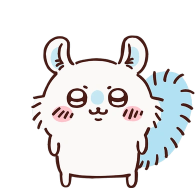
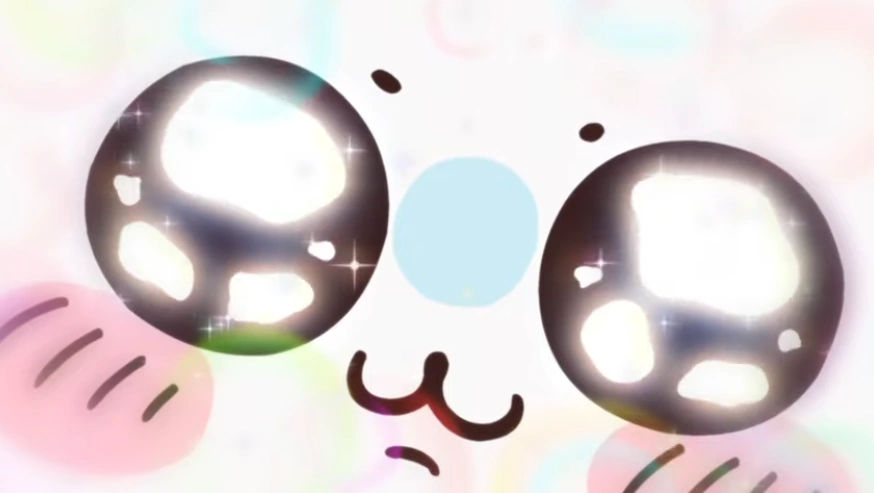
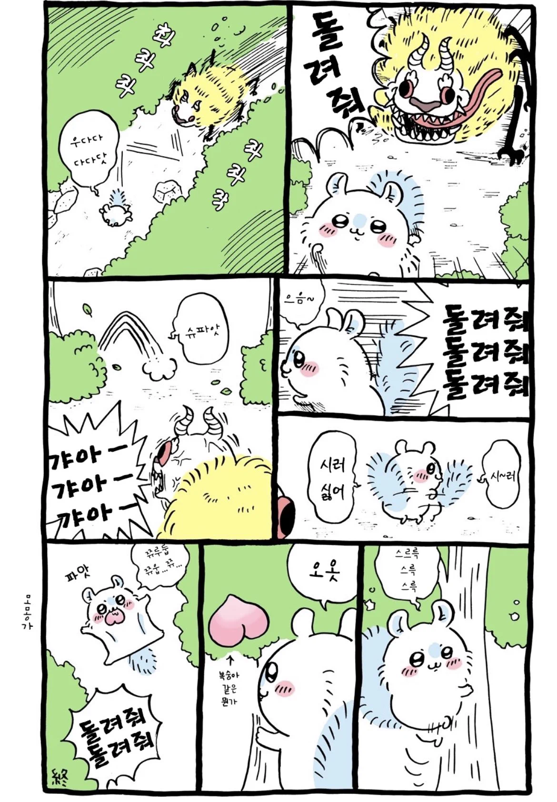
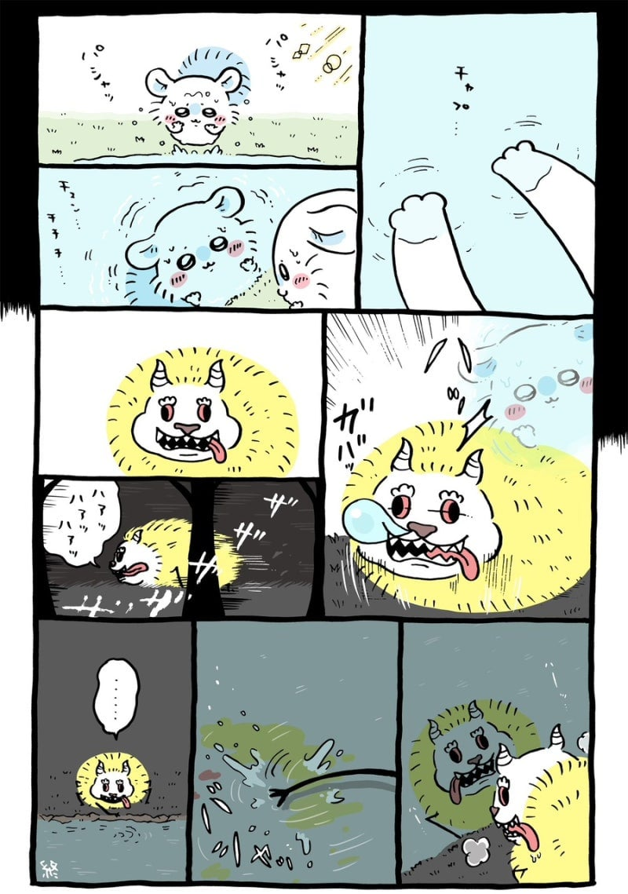
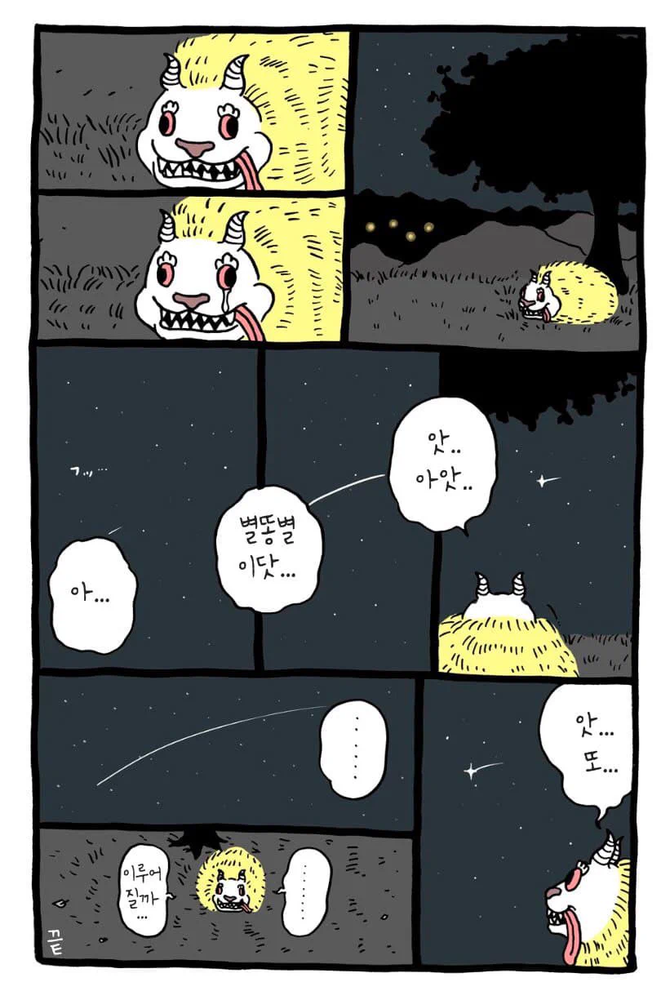
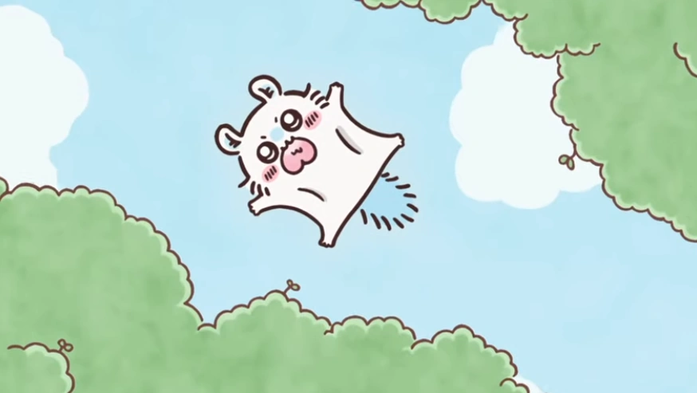

다른 사람들로 관심을 끌고 귀엽다는 칭찬을 받으려고 음식을 뺏거나 다른 사람들을 곤란하게 만든다.
활발하고 야비한 구석이 있으며 한껏 귀여운 척을 하며 관심을 받으려고 갖가지 행동을 한다. 자기중심적인 성격으로 갖고 싶은 것이 있으면 다 가지려 들고 위험한 상황에서도 먹을 것 등을 내놓으라고 한다.
다른 동물들이 하는 귀여운 행동을 따라하려고 하며 특히 치이카와가 하품을 하거나 우는 표정을 따라한다.

사실 진짜 하늘다람쥐는 테카츠요에게 몸을 뺏긴 상태다.

진짜 모몽가는 테카츠요의 몸에 갇혀산다.

너무 불쌍한 찐몽가

죽어 짝퉁괴물아.
일침은 몽가햄